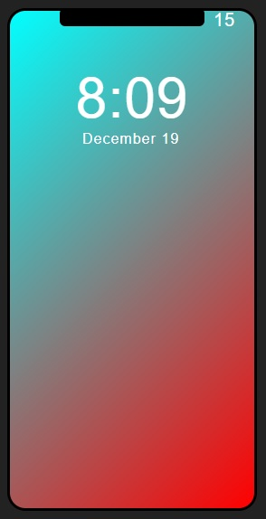
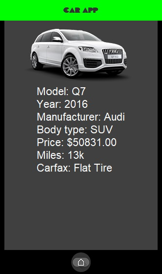
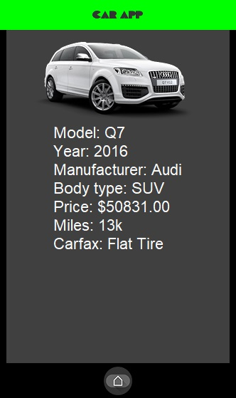
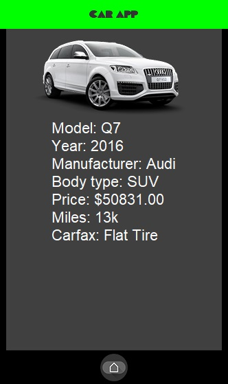

My name is Joel Goodrum. I was born in Brazil a town called "Londrina" which means little london. Since I was a young child, I loved video-games. My love for video games steered me towards loving computers. Front-end developement is what I have been currently working on the most. But I have worked with gaming 3d engines, graphic design on photoshop, music with digital audio workspaces like froot loops and etc.
Projects
iPhone Lock Screen
This project, one can see the current time on the lock screen of an iPhone.I designed designed an iPhone using html and css. I used JavaScript to get input of date and time from the computer. The has a frame refressh rate at 10000 mili seconds.

CarApp
CarApp is a Java program which simulates a mobile app where the users get o navigate a list of cars in order to purchase a one. When the user clicks on the type of car, the page shows the options available for that type. The user then can click on a specific model. After the user clicked on a model, the details of the car will show up. All the elements in this program were programmed in Java.

WizardRPG
In WizardRPG, one gets to strategically fight mistical creatures. The player and the opponent have health and magic points. The player can attack or deffend againts the opponent. The player must bring the opponents magic or healths points to zero in order to win


 
